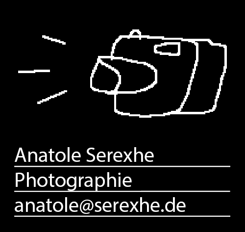
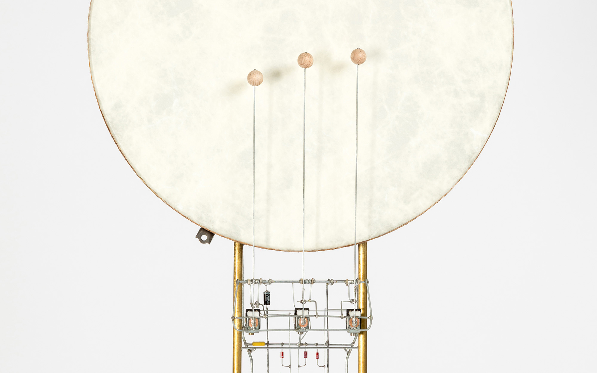
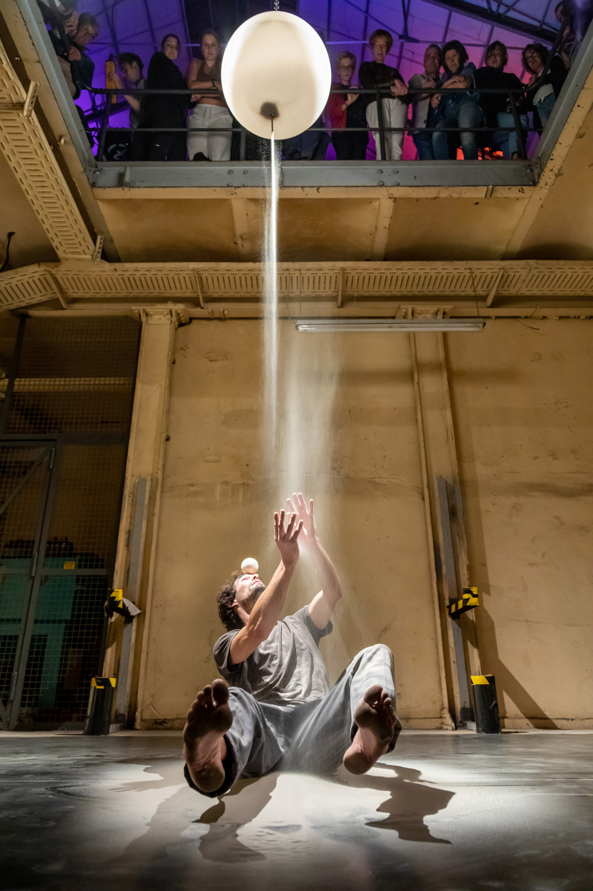
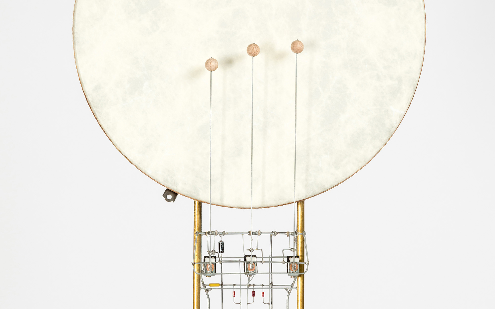
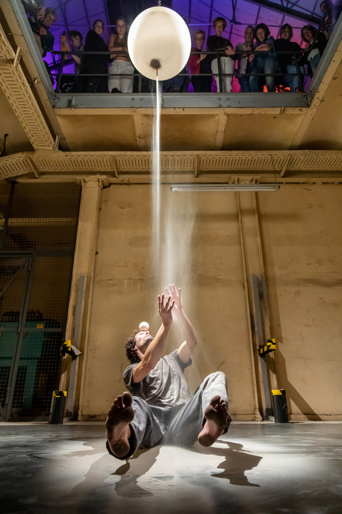
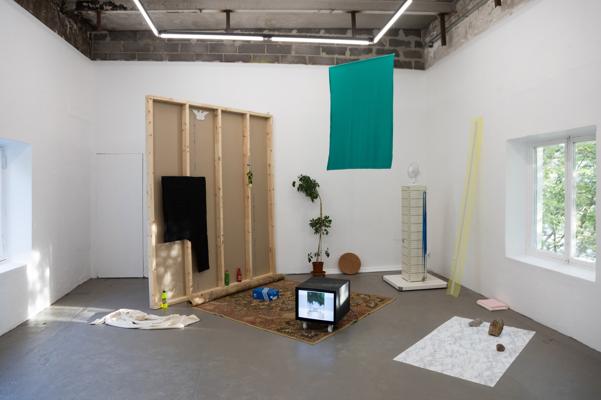
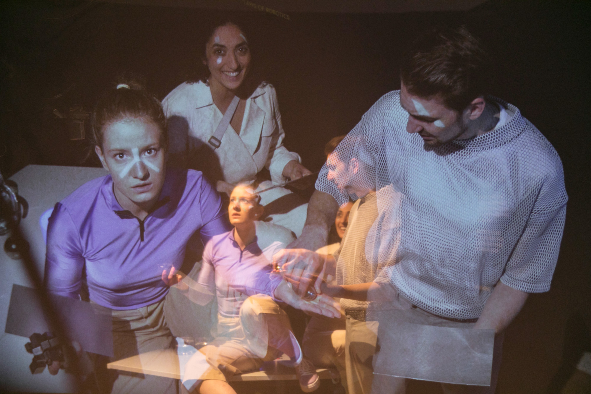

 
Peter Vogel, Trommel

Thobias Piero Dohm, Spacetime – La Nuit du Cirque 2024

Peter Vogel, Trommel

Thobias Piero Dohm, Spacetime – La Nuit du Cirque 2024
Photographische Dokumentationen
- Dokumentationen für Museen, Gallerien, Kunstvereine und Künstler*innen
Veranstaltungen
- Performances, Theater, Konzerte, Tagungen, Messen

Christina Garrido, JWIITMTESDSA? - Tallinn 2017
REFERENZEN
- Paul Virilio und die Künste - ZKM | Zentrum für Kunst und Medien, Karlsruhe, 2007
- Notation. Kalkül und Form in den Künsten - Akademie der Künste Berlin, 2008
- Tout autour de Babel - Jakob Gautel, Maison de l’Architecture, Poitiers (FR), 2009
- Herbert W. Franke - Werkdokumentation im Atellier in Egling, 2011
- Holografische Sammlung - Schafhof Europäisches Kunstforum Oberbayern, 2013
- Babel - La Botanique, Brüssel (BE), 2013
- High Performance - Julia Stoshek Collection/ZKM, 2014
- Tolwood Festival - München, 2014
- Digitas LBi - DMEXCO Köln, 2015
- HA Schult, Action Blue - 6-wöchige Reisedokumention von Frankreich über das Baltikum, Russland, Kasachstan, 2015
- Infosphere - ZKM, 2015
- Peter Vogel - Städtische Gallerie Offenburg, 2017
- Global Forest - St. Georgen, 2017
- Deutsches Phonomuseum - St. Georgen, 2017
- Global Control and Censorship (GCaC) - Wanderausstellung Goethe Institut, 2017-2018
- GCaC - Tallinna Kunstihoone, Tallinn (EST), 2017
- Deutscher Mountainbike-Kongress - 2018-2024
- Globalna kontrola i cenzura - Galeria Arsenal, Bialystok (PL), 2018
- GCaC - MODEM Center for Modern and Contemporary Art, Debrecen (HU), 2018
- GCaC - RIXC Art Science Festival, National Library of Latvia, Riga (LV), 2018
- GSÖBW Tagung - Institut für Sozioökonomie Duisburg, 2019
- Humarithm - NRW Forum Düsseldorf, 2019
- Infant Finches - Brüssel (BE), Paris (FR), 2022
- Tobias Piero Dohm, Spacetime - La Nuit du Cirque, Köln, 2023
- Leipziger Buchmesse - EDEL Verlag, Leipzig, 2024
- Lorins Promenade - Köln, Duisburg, Ütrecht, Amsterdam (NL), 2024
- Arcane Allies - RuhrDyne, Essen, 2025
- Leipziger Buchmesse - Karibu Verlag, Leipzig, 2025
- Lorins Promenade - Art Basel (CH), 2025

Humarithm - NRW Forum Düsseldorf 2019
PRESSE-VERÖFFENTLICHUNGEN
- Südkurier
- Tagesschau
- Badische Zeitung
- Westdeutsche Zeitung
- Die Welt
- Taz
Humarithm - NRW Forum Düsseldorf 2019
IMPRESSUM
- Verantwortlich: Anatole Serexhe
- E-Mail: anatole@serexhe.de
- Für Inhalte verlinkter Seiten Dritter wird keine Verantwortung übernommen.